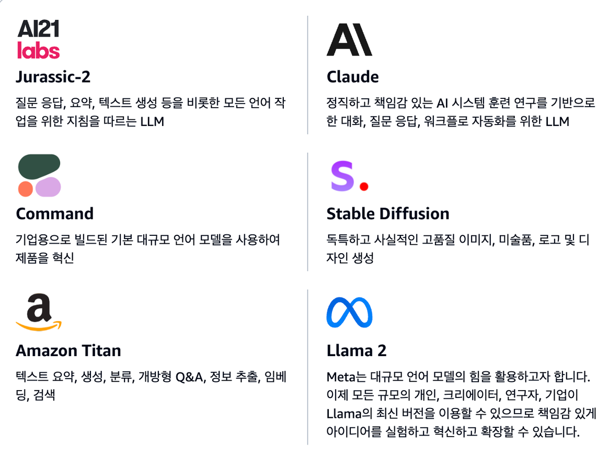
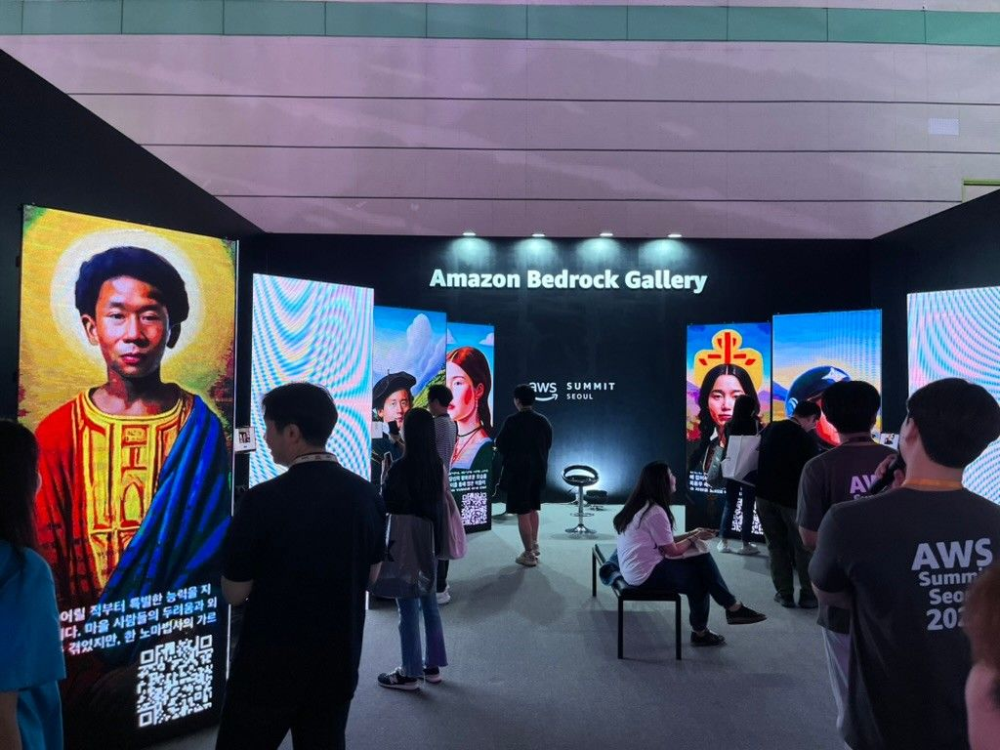
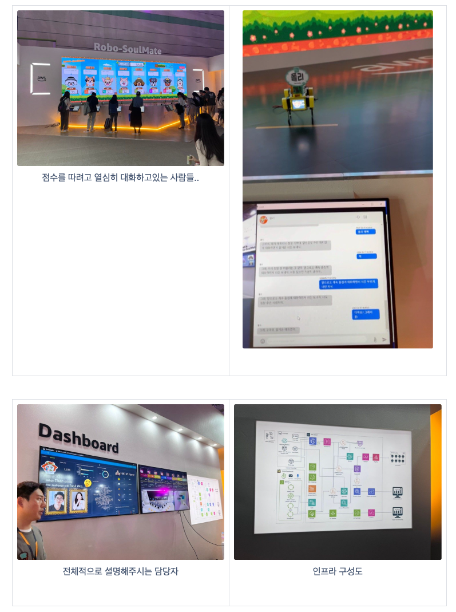
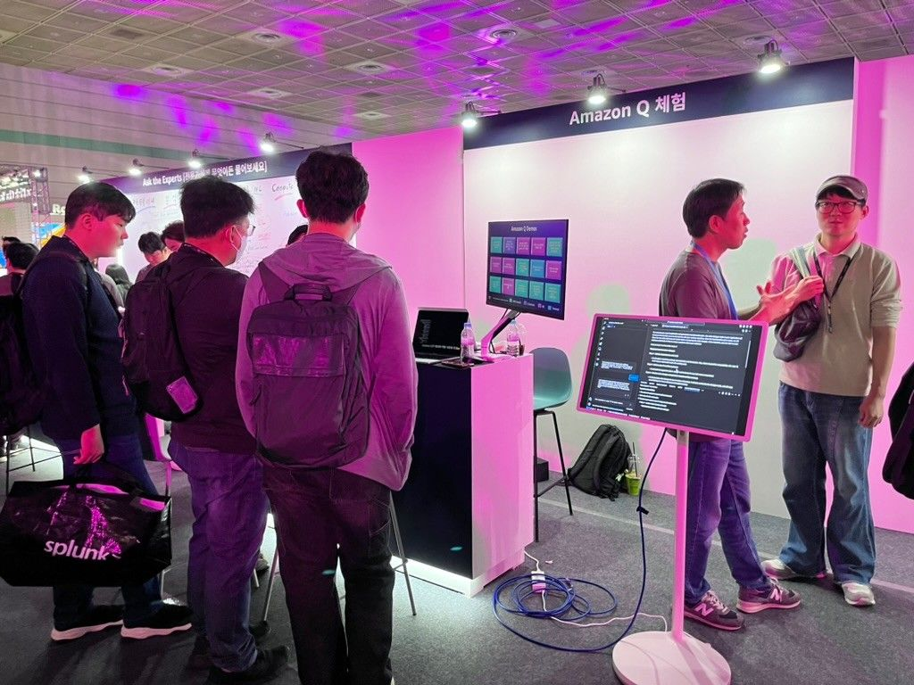
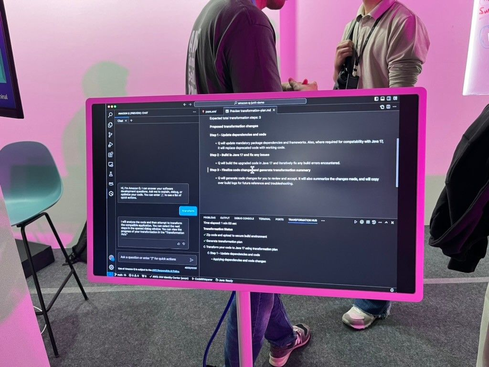
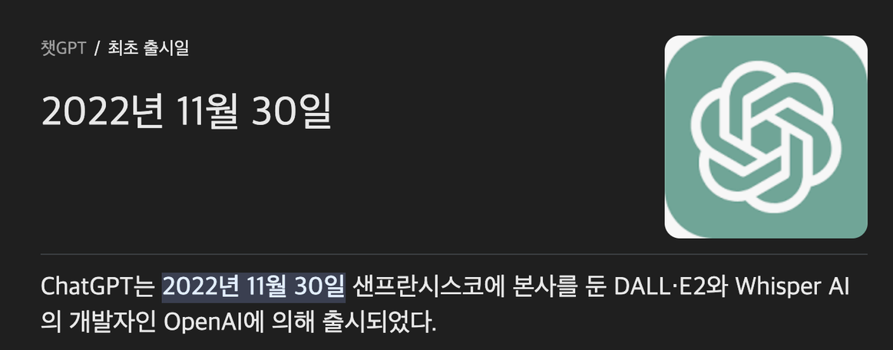

*파트너스 활동을 통해 일정액의 수수료를 제공받을 수 있음
이번 AWS 컨퍼런스에서 가장 중요하게 꼽은 키워드는 2가지라고 생각합니다.
- 생성형 AI
- 플랫폼 엔지니어링
AWS Summit Seoul 2024 컨퍼런스
AWS 2024 Summit Seoul 개요
2일차에만 참여를 하게 되었는데, 2일차 강연 아젠다도 생성형 AI 기반 기술 혁신 이었고, 관련된 주제로 진행되는 세션이 굉장히 많았습니다. 많이 언급되지는 않았지만 새롭게 떠오르는 주제로는 플랫폼 엔지니어링이라는 키워드를 꼽고 싶었습니다.
이 글은 키워드 대표 관점으로 최대한 작성해보도록 하겠습니다.
생성형 AI
생성형 AI는 이미 OpenAI가 나오면서 대중화가 되었으며, 역시 예상한대로 AI가 기술세션의 대세가 되었습니다. AWS에서 말하는 대표 키워드는 2가지를 꼽을 수 있었습니다.
- Bedrock
- Amazon Q
Bedrock
아마존에서 제공하는 완전 관리형 생성형 AI 서비스입니다. 다양한 파운데이션 모델을 선택해서 사용할 수 있으며, 현재 지원되는 파운데이션 모델은 다음과 같습니다.
Bedrock
gpt를 통해 gpt와 bedrock의 차이점을 물어봤는데 다음과 같이 대답을 합니다.
| 구분 | AWS Bedrock | ChatGPT |
|---|---|---|
| 개발사 | Amazon Web Services (AWS) | OpenAI |
| 주요 기능 | 다양한 기계 학습 모델을 손쉽게 배포하고 관리할 수 있는 플랫폼 | 대규모 언어 모델을 이용한 대화형 AI 서비스 |
| 목적 | 기계 학습 모델 개발, 배포, 스케일링 지원 | 자연어 이해 및 생성, 대화형 AI |
| 사용자 대상 | 데이터 과학자, 기계 학습 엔지니어, 개발자 | 일반 사용자, 개발자, 기업 |
| 사용 사례 | 맞춤형 ML 모델 개발, 배포, 관리 | 챗봇, 컨텐츠 생성, 교육 도구, 고객 서비스 |
| 확장성 | 여러 ML 프레임워크 및 도구와의 통합 지원 | GPT-4 모델에 기반한 다양한 응용 프로그램 |
| 모델 학습 | 사용자가 자신의 데이터로 모델을 학습 및 커스터마이징 가능 | 모델은 사전 학습된 상태로 제공되며, 사용자가 학습을 직접 수행하지 않음 |
| 접근 방식 | API 및 관리 콘솔을 통한 모델 배포 및 관리 | API 및 다양한 플랫폼에서의 직접적인 대화 인터페이스 제공 |
| 가격 구조 | 사용한 리소스에 따른 종량제 가격 책정 | OpenAI의 서비스 이용 요금제 |
1. AWS Bedrock Gallery
- Bedrock으로 만든 이미지 합성 갤러리
AWS Bedrock Gallery
2. Robo-SoulMate
여기는 로봇과 사람의 대화 위해 자연어 + 음석인식 처리 인터페이스를 만들고 각 로봇별로 특성을 만들어서 어떤 대화의 방법을 좋아하고 어떤 대화의 방법을 싫어하는지에 따라서 스코어를 매겨 점수를 올리는 게임입니다.
Robo-SoulMate
AmazonQ
사실 우리가 알고있는 copilot과 굉장히 비슷하다.
| Amazon Q 체험 및 설명 | Amazon Q 사용 예시 |
|---|---|
| Amazon Q 체험 및 설명 | Amazon Q 사용 예시 |
약간의 차별점이 있다면, AWS 서비스와 연계가 잘 되어있다는점 특히 Lambda 서비스의 코드를 구현하는데 아주 잘 되어있다. 또한 테라폼을 적용하기 위한 코드도 굉장히 최적화되어 잘 구현한다.
AWS 세션에서도 대부분 Amazon Q + 다른 생성형 AI를 함께 사용하여 어플리케이션의 완성도와 정확도를 높여가는 것을 많이 보여주었다.
플랫폼 엔지니어링
플랫폼 엔지니어링이란, 내부 개발자들이 더 효율적으로 작업할 수 있도록 통합된 개발 환경, 도구, 서비스를 설계하고 구축하는 것을 의미합니다. 플랫폼 엔지니어링의 주요 목표는 개발자들의 생산성을 높이고, 코드 배포의 속도와 안정성을 향상시키며, 인프라 관리를 자동화하는 것입니다.
클라우드 운영 모델 비교 (중앙화 vs 탈중앙화)
| 구분 | 중앙화된 모델 | 탈중앙화된 모델 |
|---|---|---|
| 책임 | 중앙팀이 대부분의 책임을 짐 | 개발자에게 책임이 있음 |
| 속도 | 느림, 배포에 병목 발생 | 민첩성과 운영성이 뛰어남 |
| 적합성 | 다양한 요구사항을 가진 개발팀에게 비효율적 | 개발팀의 자율성 증가, 그러나 불일치에 대한 위험 존재 |
| 책임 분담 | 중앙팀이 관리 | 인프라 및 애플리케이션에 대한 자율성과 결정권을 개별 팀이 가짐 |
플랫폼 엔지니어링의 장점
- 플랫폼은 개발 속도를 빠르게 하여 목표 달성 시간을 단축합니다.
- 플랫폼의 가드레일은 자율성을 제공하면서도 안전장치가 됩니다.
- 플랫폼은 클라우드 도입 여정에서 규모의 경제를 달성할 수 있도록 지원합니다.
플랫폼 구현 및 도입 패턴
- 플랫폼을 제품처럼 다룬다.
- 내부 고객의 피드백을 반영한다.
- 리드타임을 줄여 확장성을 부여한다.
- 템플릿 문서로 골든패스를 제공해야 한다.
- 가장 얇고 실행 가능한 플랫폼으로 만든다.
- 점진적으로 개선한다.
무신사의 플랫폼 엔지니어링 사례
무신사의 플랫폼 엔지니어링 사례를 통해 개념, 클라우드 운영 모델의 차이점, 플랫폼의 장점 및 도입 사례를 이해할 수 있습니다.
끝으로
alt text
ChatGPT가 세상에 알려진지 2년이 되지 않았습니다. 2011년 스마트폰이 본격적으로 대중화되면서 IT발전 속도가 빨라진 것처럼 생성형 AI의 등장으로 기술의 발전은 기하급수적으로 이루어지고 있습니다. AI의 민주화가 되어 비개발 직군에게는 오히려 기회가 되었고, 개발 직군은 더 많은 것을 활용하여 서비스를 제공할 수 있는 선택의 폭이 너무 넓어졌습니다.
AWS의 행사를 통해 업계 트렌드를 알게 되었고, 더 쉽게 접근이 가능하다는 사실도 알게 되었습니다. 재미있었고 유익했습니다. 끝으로 기술을 쫓기보다는 문제 해결을 위해 필요한 것들을 미리 준비하여 변화에 잘 대응해야겠습니다.
AWS Summit에 참여할 수 있는 기회를 주셔서 감사하고, 나의 성장과 개발팀의 성장을 돕는 사람이 되도록 하겠습니다.